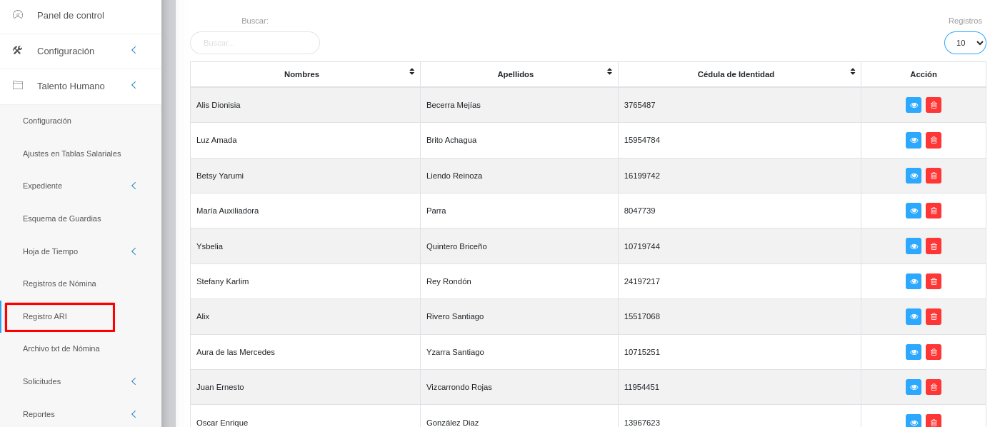

Registro ARI

Pasos iniciales del Registros de ARI
El usuario selecciona el módulo de Talento Humano en el menú lateral de los módulos del sistema, ahí visualizará las opciones Configuración, Ajustes en Tablas Salariales, Expediente, Esquema de Guardias, Hojas de Tiempo, Registros de Nómina, Registro ARI, Archivo txt de Nómina, Solicitudes y Reportes. Luego pulsa la opción Registro ARI y el sistema muestra las secciones correspondientes a la Gestión de registro de planilla ARI.

Parámetros iniciales del Registros de ARI
En la Gestión de registro de planilla ARI se observará una vista general denominada REGISTROS DE PLANILLA ARI. En la esquina superior derecha las funcionalidades  para “Ir atrás”, “Crear nuevo registro”, “Importar Registros”, y “Descargar la Información”. En caso que el usuario pulse el botón Importar/Exportar el sistema generará un archivo de hoja de cálculo con las columnas: Cédula de identidad, Porcentaje, Desde y Hasta.
para “Ir atrás”, “Crear nuevo registro”, “Importar Registros”, y “Descargar la Información”. En caso que el usuario pulse el botón Importar/Exportar el sistema generará un archivo de hoja de cálculo con las columnas: Cédula de identidad, Porcentaje, Desde y Hasta.
Si el usuario pulsa el botón Importar el sistema solicita seleccionar el archivo para realizar la carga. Si el archivo se cargo de forma correcta, el sistema muestra el siguiente mensaje: Registro almacenado con éxito. Una vez guardado con éxito el registro, el sistema muestra una tabla que contiene las siguientes columnas Cédula de Identidad, Fecha de inicio, Fecha Fin, Porcentaje ARI y Acción (Modificar registro y Eliminar registro). Si el usuario pulsa el botón Exportar el sistema descarga un archivo con las cuentas contables que han sido previamente cargadas.
Más abajo la opción Buscar para encontrar rápidamente alguna información, pudiendo escogerse el número de registros a visualizar (10, 20, 50). Luego en el registro se detallan: Nombres, Apellidos, Cédula de Identidad y Acción. Quedando en el extremo derecho la opción para visualizar o eliminar el registro.

Crear Registro ARI
Si el usuario pulsa el botón Crear nuevo registro  el sistema muestra una pantalla llamada “Porcentaje de cálculo de ARI” que contiene los siguientes campos: “Cédula de Identidad”, “Nombres”, “Apellidos”, “Ficha”, “Porcentaje, “Desde y Hasta”. Cargados los datos se presiona el botón Guardar
el sistema muestra una pantalla llamada “Porcentaje de cálculo de ARI” que contiene los siguientes campos: “Cédula de Identidad”, “Nombres”, “Apellidos”, “Ficha”, “Porcentaje, “Desde y Hasta”. Cargados los datos se presiona el botón Guardar  para registrar los cambios y poder observarlos. Pudiendo igualmente Cancelar
para registrar los cambios y poder observarlos. Pudiendo igualmente Cancelar  o Borrar para eliminar datos del formulario. Como se ejemplifica a continuación así quedaría la ficha cargada, pudiendo ser editada si se requiere.
o Borrar para eliminar datos del formulario. Como se ejemplifica a continuación así quedaría la ficha cargada, pudiendo ser editada si se requiere.


Gestión de registros
Para información detallada: Ver registro o borrar un registro se debe hacer uso de los botones ubicados en la columna titulada Acción de la tabla de registros en la sección de Registro ARI.

Ver registros
- Presione el botón Ver registro  para detallar un registro de interés.
para detallar un registro de interés.
- Luego, el sistema muestra información asociada al Registro ARI.
- Presione el botón Cerrar identificado como una "X" de color rojo en la aprte superior derecha para salir de la interfaz.
Editar registros
- Presione el botón Editar registro  para modificar un registro.
para modificar un registro.
- Luego, el sistema muestra el formulario en forma de edición.
- Modifique la información que requiera.
- Presione el botón Guardar  para registrar los cambios efectuados.
para registrar los cambios efectuados.
En casos de error
- Si el usuario introduce un dato de mensaje de manera incorrecta: el sistema muestra por pantalla un mensaje de notificación indicando los campos donde se ingresó información incorrecta.
- Si el usuario omite llenar un campo solicitado: el sistema muestra por pantalla un mensaje de notificación indicando los campos donde se ignoró la información solicitada.
Campos obligatorios
- Los campos “Cédula de Identidad”, “Porcentaje”, “Desde” son campos obligatorios.
- Los campos “Nombres” y “Apellidos” se cargan automáticamente al ingresar la cédula de identidad del trabajador.
- Los campos “cédula de identidad” y “porcentaje” son campos de tipo numérico.
- Los campos “Desde” y “Hasta”, son campos de tipo fecha.